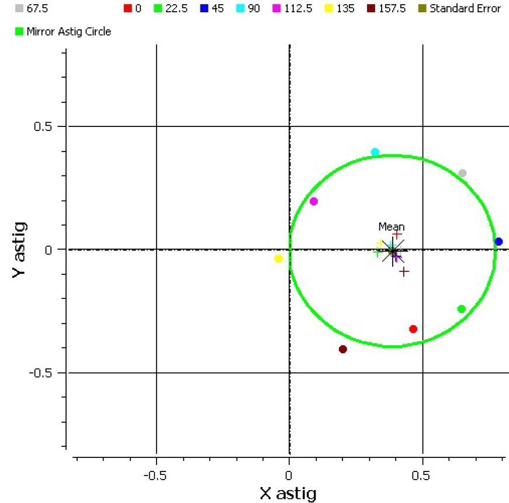
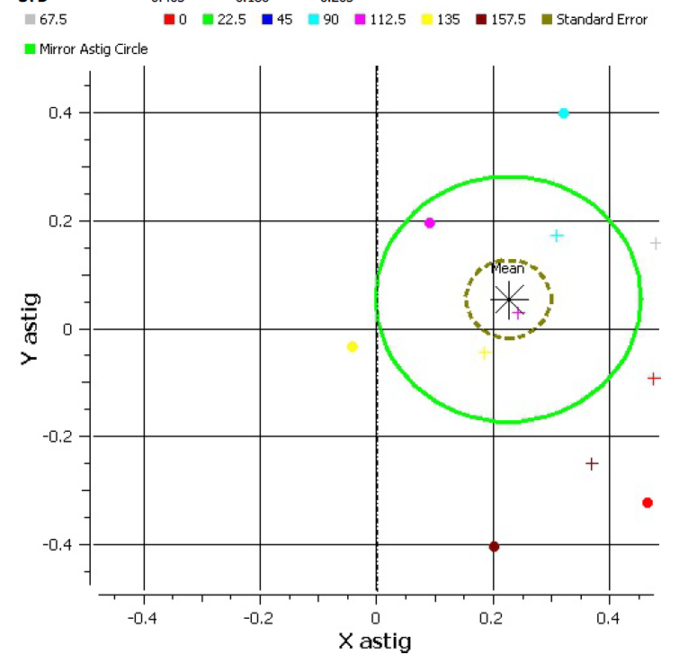
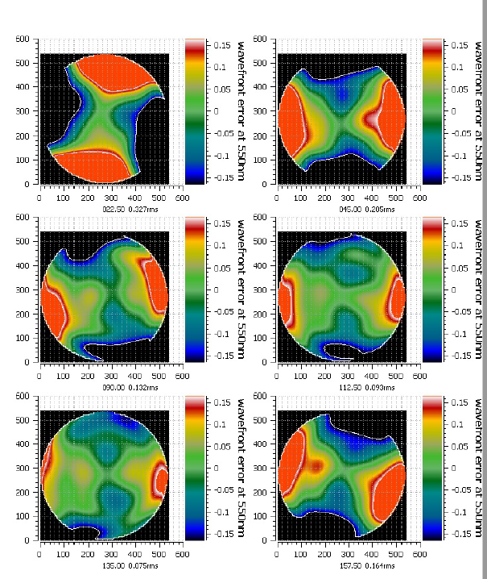

The procedure to remove system induced astig can be fought with errors. This will try to explain what to look for in the stand astig removal report to verify that it has worked correctly. The first thing to look at is the plot of astig values for both the mirror and test stand at each mirror rotation angle. When a mirror with astig is rotated on a stand it produces a constant astig in addition to the mirror astig the measured astig value will change at each rotation but it will be on a circle centered about the stand induced astig. The radius of the circle will be the magnitude of the astig on the mirror alone. That circle is display in green on the plot. It looks like this.
The above image shows a successful execution. The colored dots of each mirror rotation are all close to the green circle and all stand astig values are clustered close together near the center of the circle. Deviations from the desired could be caused by air current.q44 3wsz From this we can also see that the test stand induced an X astig Wyant Zernike coefficient of about .4
Here is a plot from a failed attempt.
The above image is a failed attempt. Notice that the mirror astig values (colored dots) are not close to the green circle and the stand astig values are not clustered at the middle of the circle.
One cause of a failed attempt would be if you made a mistake and counter rotated a wave front in the wrong direction.
Lets look at the stand induced wave front in the next part of the report to see where the problem might be. In this case the upper left diagram shows forces different than all the rest. That means it might have been derotation in the wrong direction (which it was.)
